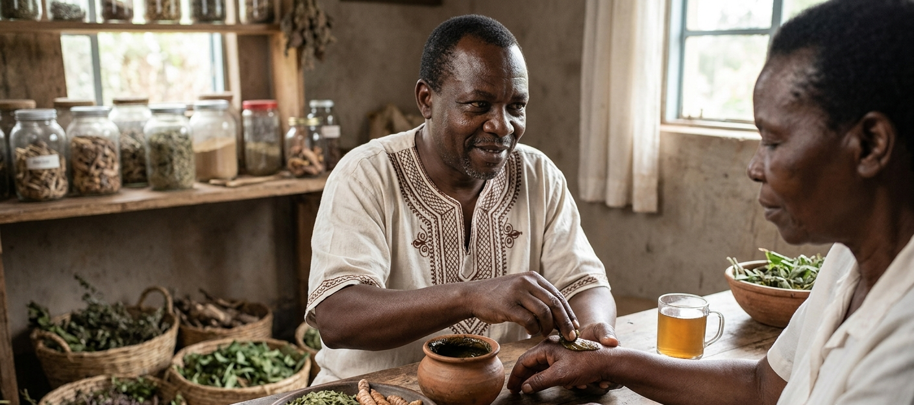

Natural relief for swelling and inflammation. Our powerful herbal remedies, including anti-inflammatory teas and topical ointments, help reduce swelling in legs, joints, and other body parts, promoting healing and comfort. This service uses time-tested African herbal medicines known for their powerful anti-inflammatory properties.
Swelling and inflammation can be caused by various conditions, including arthritis, injuries, circulatory issues, and other health concerns. Our holistic approach addresses the root causes while providing natural relief from discomfort.
Common conditions we help with:
We begin with a thorough health consultation to understand your condition, symptoms, and health history. Our master herbalist then prepares a personalized combination of anti-inflammatory teas and topical treatments using rare African herbs known for their powerful healing properties.
You'll receive detailed guidance on how to use the teas and ointments for maximum benefit, along with dietary recommendations to reduce inflammation from within. The 2-week follow-up allows us to monitor your progress and make any necessary adjustments.
Many clients experience significant relief within days of starting the herbal protocol. Our comprehensive approach addresses both immediate symptoms and underlying causes.
Important note: Our herbs are meant to complement, not replace, conventional medical treatment. Always consult with your healthcare provider before starting any new treatment.
Watch: Herbal Healing & Swelling Relief
Q: How quickly does the swelling go down?
A: Many clients experience relief within 24-48 hours of starting the treatment. Complete healing may take 2-4 weeks depending on the condition.
Q: Are these herbs safe for long-term use?
A: Yes, our herbs are natural and safe for extended use. We'll guide you on the appropriate duration for your specific condition.
Q: Can I use this with my current medication?
A: While our herbs are generally safe, we recommend consulting with your healthcare provider to ensure there are no interactions with your current medication.
Q: Can this service be done remotely?
A: Yes, we offer remote consultations and can ship herbs to your location.
Q: What if I don't see results?
A: We offer a follow-up consultation to make adjustments to your treatment plan. We're committed to your healing journey.
"I was suffering from severe joint swelling and pain. Professor Mtasha's herbs provided relief in days. I can now walk without pain. I'm so grateful!"
— Martha N., Nairobi
"After years of leg swelling, Professor Mtasha's remedies made a real difference. The ointment and tea combination worked wonderfully. Highly recommend."
— Samuel K., Eldoret